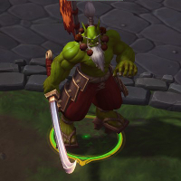
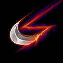
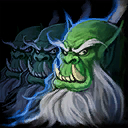
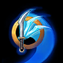
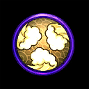
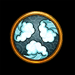
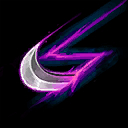
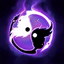
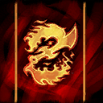

Samuro
Welcome to our Samuro guide for Heroes of the Storm. Here you will learn everything you need to know in order to play Samuro in a competitive environment, whether you play on your own or with a team.
Harsh Winds Build
| Level 1 | Level 4 | Level 7 | Level 10 | Level 13 | Level 16 | Level 20 |
|---|---|---|---|---|---|---|
|  |  |  |  |  |
These Talents are built around dealing as much damage to an enemy as possible during Harsh Winds Icon Harsh Winds' debuff period. Although it is set up for a Level 16 Talent, it will perform well at all stages of the game because of the high value picks in every tier. Once an enemy is marked, you want to immediately cast Mirror Image Icon Mirror Image to deal as much damage possible. If you see kill potential you may want to follow this up with Bladestorm Icon Bladestorm to secure the kill, as it also benefits from the increased damage.
Illusion Master Build
| Level 1 | Level 4 | Level 7 | Level 10 | Level 13 | Level 16 | Level 20 |
|---|---|---|---|---|---|---|
|  |  |  |
This build is very useful if you plan to focus on merc camps during the mid game, as it will increase damage done by the Images. Once you hit Level 16, you will be able to participate more effectively in team fights thanks to the pressure and Image sustainability afforded by Mirrored Steel Icon Mirrored Steel and Press the Attack Icon Press the Attack. Because Illusion Master allows you to take control of (and switch places with) your Images, this build path can also be very effective on maps that require point control, such as Dragon Shire and Sky Temple. Send one Image to the point you wish to control, and keep one with you in a nearby lane. Swap to the Image on point as necessary. A single enemy Hero will not be able to do both tasks at the same time, and you will force them to decide between going to the point or soaking experience. This strategy is not recommended on Braxis Holdout, because you will not be able to do much during the very important early game.
Go Back